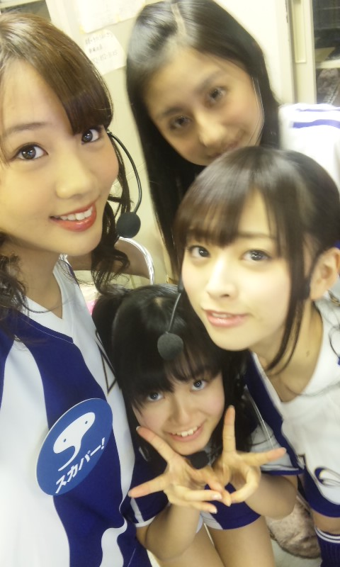

| 2012/03 27 Tue | ひめたん(* ゝω・*)ノ その113 |
瑞穂競技場
で
左胸の勇気
を披露してきました!
名古屋グランパス
対
アルビレックス新潟
の試合を応援してきましたよ(^^)
ひめたん人生初の生サッカー観戦。
「おおおおおおおおぉっ!?」て場面がたくさんあって、見応えたっぷりの試合でした♪
そしてグランドでのライブ!
実はアンダーだけでライブするのは今日が初めてで、
しかも乃木坂46はじめましてのお客さんがほとんどって環境だったので
どうなるかなあって不安でした('・ω・`)
んでもお客さんめーちゃ温かく私たちを迎えてくださったの!
試合前にわくわくうずうずしていらっしゃったにも関わらず
一緒に盛り上がってくださって本当に嬉しかったです(o>ω<o)!
グランド一周まわったりもしたのですが
「頑張れー!!!」なんて声が聞こえてもう高山っ('ω`)
私たちのために駆け付けてくださった方もいらっしゃって
めちゃ心強かったです!

左・
あみあみ
(能條愛未chan)
上・
るんるん
(斎藤ちはるchan)
右・
ねねころ
(伊藤寧々chan)
下・
ひめたん
ぶれぶれるんるん。
でね。
ひめたんこの3日間みんなと一緒だったからね
なんかいろいろ楽しかったっもっと仲良くなった気がするよ(*^^*)
一緒にバス乗ったり
一緒に新幹線乗ったり
一緒にお風呂入ったり
べびたん
(伊藤万理華chan)を「
まりか
(ω)☆」って呼ぶようになったり
ろってぃ
(川村真洋chan)を「
ろっつぃ
(ω)☆」って呼ぶようになったり
みゅみゅ
(若月佑美chan)を「
勝俣
(ω)☆」とか「
中元
(ω)☆」って呼ぶようになったり
ん最後のはうそよ♪
若月ブログに中元さん出てきてちょっと嬉しかったのよ(//ω//)
らりん
(永島聖羅chan)にべったりしてみたり
みさみさ
(衛藤美彩chan)にべったりしてみたり
まいまい
(深川麻衣chan)にべったりしてみたり
ゆみ姐
(岩瀬佑美子chan)にべったりしてみたり
「
てへぺろぺろぺろー
 」が流行ったり
」が流行ったり
」が流行ったり
「
ちゅーしちゃうぞっ
 」が
」が
」が
今まで以上に流行ったり
あみあみ
が世界一あひるぐちが似合わない女の子になったり
ゆっきーな
(柏幸奈chan)と花粉症でびゅーしたかもしれない話をしたり
かずみ今日も握手会で「
ひめたん
推しです!」って言ったの(^^)
って
かずみさん
(高山一実chan)が自慢してくれたり
ななせまる
(西野七瀬chan)に向かって「ん〜〜〜〜〜!ななせまるぅ!」したり
せいたん
(畠中清羅chan)に向かって「せいたんなうぅ!」したり
るんるん
あしゅ
(齋藤飛鳥chan)
かわごってぃ
(川後陽菜chan)
とラッパーになれるアプリで笑いすぎて笑ったり。
「まりか。」
「ひめか。」
「ふふ(*^^*)」
って笑い合ってん♪
by
まりか
☆
あ遠州弁もマスターした!
まいまいだに?
まいまいど可愛いら〜♪
ねっ!
楽しそうしょ?
そうなの楽しいの!!!!
乃木充っ(o>ω<o)
今日はレコーディングからの
ろっつぃ
、
まりか
、
みゅみゅ
、
まいまい
、
らりん
とディナー。
名前は席順(*^^*)
まったりごはん食べながらおはなししたの。
お散歩もした。
もう楽しかったよー!!!
それではここで問題。
全員で何人のメンバーの名前が登場したでしょう
 ?
?
?
これ過去最多カナ(^^)?
これ過去最多かもしれー。
ひめたん(*´・ω・*)
コメント(103)
2012/03/27 00:06